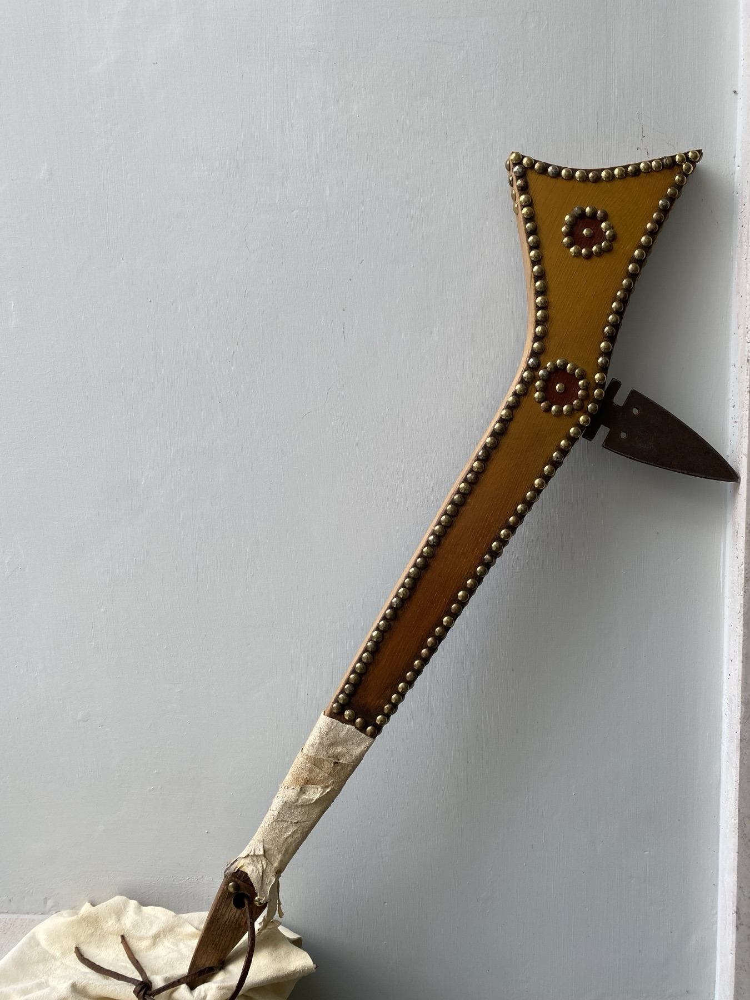
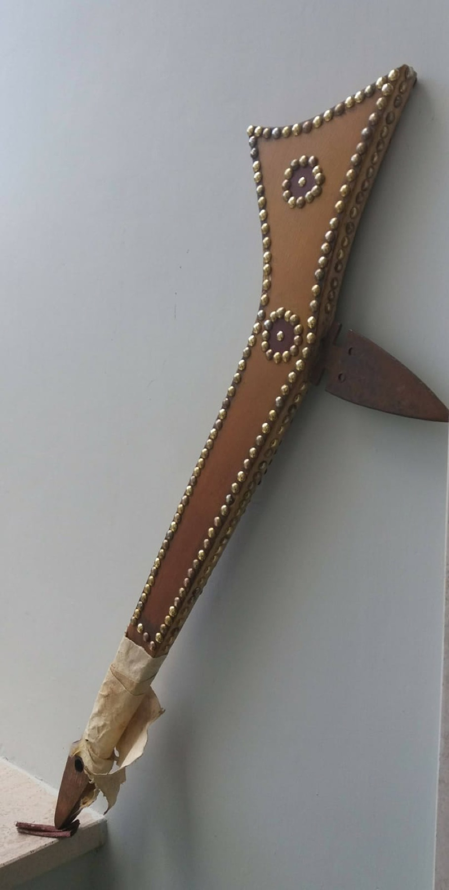
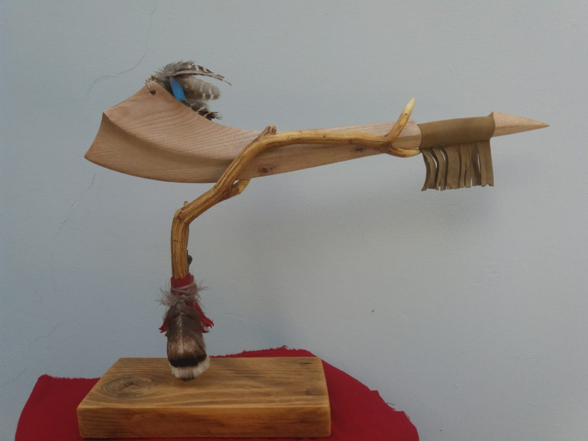

Diario · 25 novembre 2026
La mia mazza a calcio di fucile, sul modello dei Dakota
Sul sito ci sono due mie mazze a calcio di fucile, e non si somigliano. Questa è quella con la lama.

L'ho fatta sul modello dei Dakota del 1840. È lunga circa 80 centimetri, e la lama, 13 centimetri, è piantata nella curva del profilo. Il legno è dipinto e tutto il bordo è segnato di borchie. Le rosette sono due, ognuna con un tondo scuro al centro: una in alto, l'altra all'altezza della lama. L'impugnatura è fasciata.
Il 1840 è ancora il tempo in cui queste mazze si portavano in battaglia. Dalla metà dell'Ottocento in poi diventarono soprattutto oggetti simbolici e rituali.

L'altra è una variante, nello stile della regione dei Grandi Laghi, o delle Praterie, e l'ho ripresa da un'incisione di Seth Eastman del 1853. È più corta, 55 centimetri, in legno chiaro, con le piume e senza lama di metallo.

Da dove viene il nome e cosa c'entrano il tuono e il falco lo trovi qui nel Diario, nell'articolo del 2021 «Mazza da guerra indiana a calcio di fucile (gunstock war club)».
Sono pezzi unici tutte e due, e sono in vendita. Se ti interessa una delle due, o vuoi farmi una domanda, scrivimi dalla pagina Contatti.
Riproduzione personale di gunstock club (mazza a forma di fucile) · sul modello dei Dakota del 1840 · lunghezza 80 cm circa · lama 13 cm